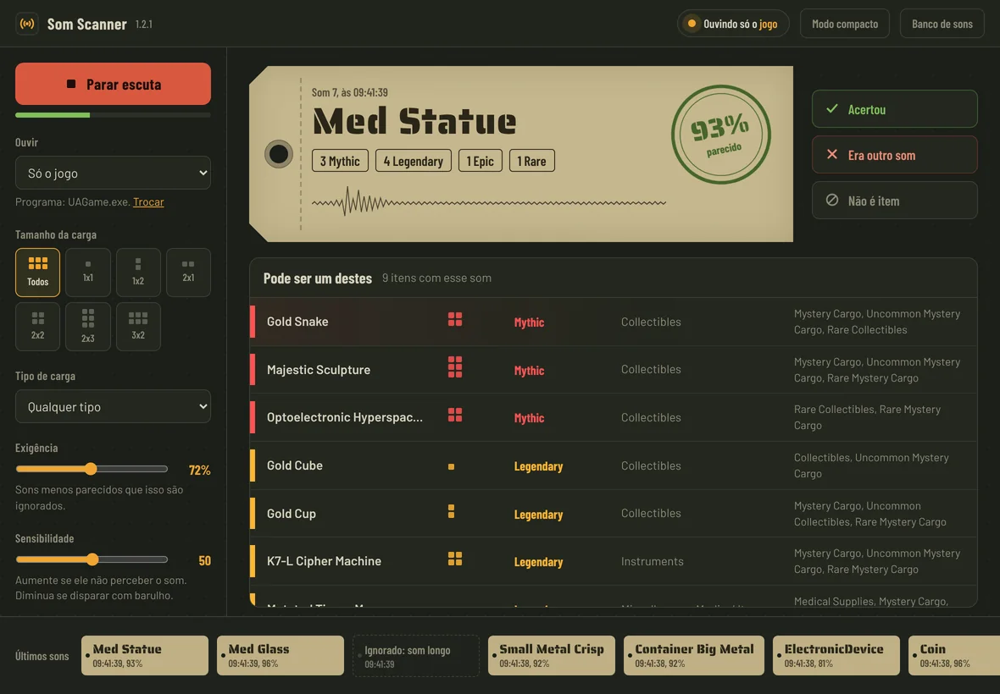

Descubra o que tem na carga só pelo som
Arraste a carga misteriosa no mercador. O Som Scanner escuta o som que ela faz, identifica qual é e mostra na hora quais itens podem estar dentro, do mais raro ao mais comum.
O Som Scanner só roda no Windows 10/11. Abra esta página no PC onde você joga.
O Som Scanner é um programa para Windows. Abra esta página no PC onde você joga para baixar.
- Não lê nem altera o jogo
- Só escuta o som que já sai no seu PC
- Baixado direto do GitHub
- Gold Snake2x2Mythic
- Majestic Sculpture2x3Mythic
- Gold Cube1x1Legendary
- Gold Cup1x2Legendary
- K7-L Cipher Machine2x2Legendary
- + 4 outros itens
O que ele faz
Sem ficar testando som por som num site: ele faz a comparação sozinho.

Reconhece na hora
Assim que você arrasta a carga, ele mostra o palpite em menos de um segundo. Dá para escolher ouvir só o jogo, ignorando os outros sons do PC.
Itens e raridades
Lista todos os itens possíveis com tamanho, raridade colorida, categoria e em quais cargas aparecem.
Filtros do jogo
Escolha o tamanho (1x1 a 3x2) e o tipo de carga para ver só o que realmente pode vir.
Aprende com você
Errou? Clique em "Era outro som" e mostre qual era o certo. Da próxima vez ele acerta.
Como usar
Três passos, do download ao primeiro palpite.
- Baixe e instaleAbra o
SomScanner-Setup.exee siga o instalador.Como o programa é novo, o Windows pode mostrar "O Windows protegeu o computador". Clique em Mais informações e depois em Executar assim mesmo.
- Clique em "Iniciar escuta"Deixe o programa aberto. Marque "Sempre no topo" se quiser ele por cima do jogo.
- Arraste a carga no mercadorO palpite aparece na hora com os itens possíveis. Se quiser, filtre pelo tamanho e pelo tipo da carga.
Perguntas
Isso mexe no jogo?
Não. Ele só escuta o áudio que já sai no seu PC, como se você tivesse decorado os sons. Não lê nem altera nada do jogo. Mesmo assim, o uso é por sua conta: confira os termos do jogo.
Ele não reconheceu o som. E agora?
Aumente a Sensibilidade, diminua a Exigência e confira os filtros de tamanho e tipo. Se ele chutou errado, use o botão "Era outro som" para ensinar o som certo.
Funciona com fone?
Sim. Ele capta o áudio do dispositivo de saída padrão do Windows, seja fone ou caixa de som.
Funciona no celular ou no Mac?
Não. O Som Scanner é um programa para Windows 10 e 11 (64 bits) e precisa rodar no mesmo PC do jogo.
Como desinstalar?
Configurações do Windows → Aplicativos → Som Scanner → Desinstalar.
Descubra o que tem na carga
só pelo som
O Som Scanner é um programa para Windows. Abra esta página no PC onde você joga para baixar.